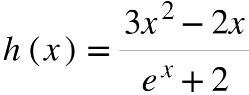
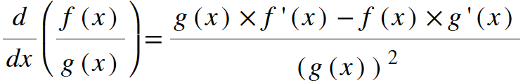
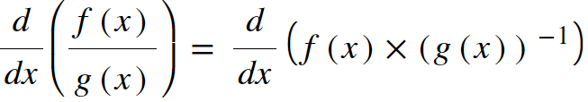
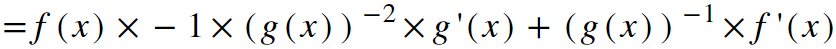
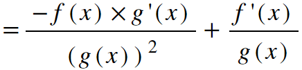
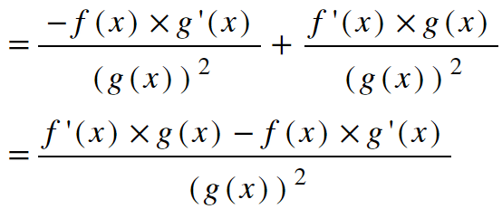

The Quotient Rule
Now that we've explained the product and chain rules, we can use those formulas to derive the quotient rule. The quotient rule is a daunting formula at first glance because it appears longer and more complicated than any of the other derivative formulas. Hopefully, though, this explanation will reveal that it's actually quite simple.
As you may have guessed, the quotient rule is used to find the derivative of a function defined as the quotient of two other functions. For instance, suppose you had the following function:

Clearly, this is the quotient of two functions. We can choose
f
to represent the function in the numerator: f(x)=3x2 - 2x. Then, we can choose g
to represent the function in the denominator: g(x)=ex + 2. So, if we want to find h'(x), the derivative of h(x), we need a derivative formula that will tell us how to handle differentiating quotients of two functions. That's where the quotient rule comes in. It tells us that we can find the derivative of a quotient of two functions as follows:

See? It looks long and complicated. But take a moment to break it down. The numerator of the derivate takes a form that is very similar to the product rule formula. The only difference is that the plus sign in the product rule has become a minus sign in the quotient rule. Note that this means you can not switch the order of the terms in the numerator like you can with the terms in the product rule formula. g(x)•f'(x) - f(x)•g'(x) ≠ f(x)•g'(x) - g(x)•f'(x), so you must follow the formula exactly. The denominator of the derivative, then, is just the denominator of the original function, squared. So even though the quotient rule formula may seem daunting and complex, as long as you can take the derivatives of the simple functions in the numerator and denominator, all you need to do is plug them into the formula and you're golden! Let's see how that would work for our example above. Let's say again that f(x) represents our numerator function and g(x) represents our denominator function. f'(x) would be 6x - 2, and g'(x) would be ex. Plugging these into the quotient rule formula, we get:
raw.PNG)
simplified.PNG)
Ok, so we see that even though the quotient rule is long and has many terms, it's pretty straightforward to use, even if the resultant derivative ends up being as ugly as the example above. But just for fun, let's analyze the quotient rule a bit deeper. I mentioned that the numerator of the quotient rule formula resembles the product rule formula. That should make sense! Multiplication and division are related operations after all. In fact, any multiplication problem can be written as division, and vice-versa. For example, 3•2 is the same thing as 3/2-1. If that's the case, then couldn't we just write any function that is a quotient of two other functions as a product of two functions, and then use the product rule to find the derivative? Yes! Actually, the quotient rule can be viewed as a corollary of the product rule because it can be derived using that exact logic. Let's see how.
Consider the function defined by f(x) / g(x). That's exactly the same as f(x)•(g(x))-1. Let's see if we can use the product rule to derive the quotient rule (we'll need the chain rule too):
Consider the function defined by f(x) / g(x). That's exactly the same as f(x)•(g(x))-1. Let's see if we can use the product rule to derive the quotient rule (we'll need the chain rule too):


When we switch to a product of two functions, the second function is no longer just g(x). It becomes (g(x))-1. So, we need our chain rule to take a derivative. We can think of it as a composition of the functions x-1 and g(x). So first we use the product rule, bringing the exponent of -1 to the front and subtracting one from it to find the new exponent of -2. But because g(x) is composed into that function, we need to multiply by its derivative. So, the derivative of (g(x))-1 is -1•(g(x))-2•g'(x). Let's continue simplifying the above expression by moving the functions raised to negative powers to the denominator:

Now all we need to do is multiply the rational expression on the right by g(x)/g(x) in order to create a create a common denominator, then add them together:

And there we have our quotient rule. Neat right? As it turns out, the quotient rule is really just the product rule, but for a specific situation, one in which the second product is raised to a power of -1.